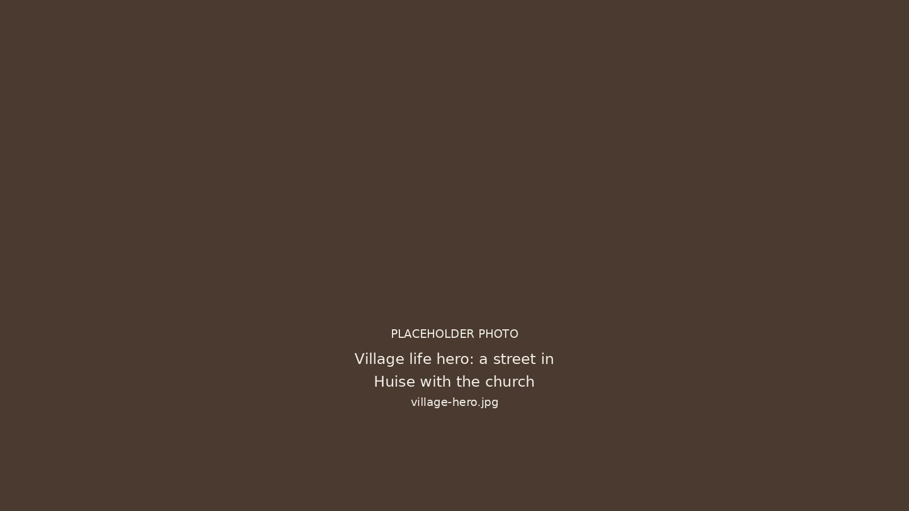
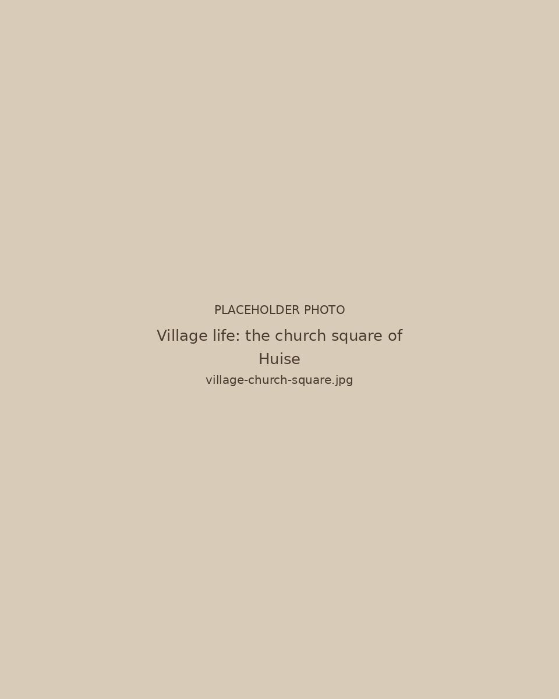
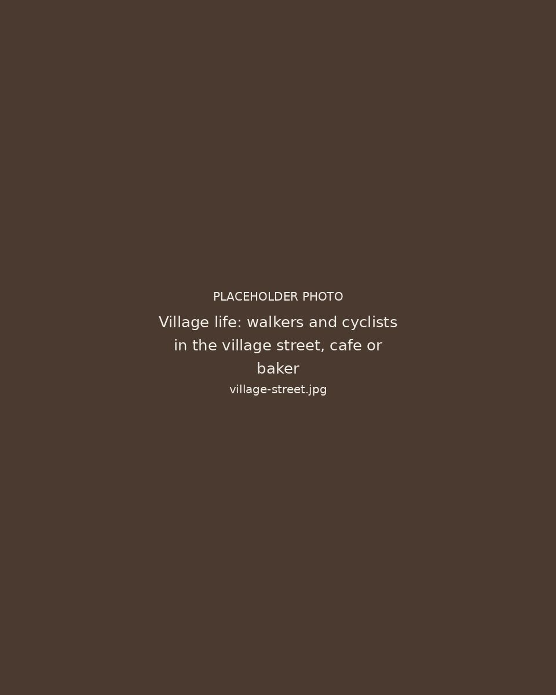

DorpslevenVillage lifeVie de villageDorfleben

Het leven in HuiseLife in HuiseLa vie à HuiseDas Leben in Huise
Je zit midden in Huise, een echt Vlaams dorp in Kruisem. Een kerkplein, een cafe, een voetbalploeg en een jeugdvereniging. Het leven gaat hier gewoon door. Dit is geen resort en geen afgelegen plek in de natuur, maar een huis in de kern van een levend dorp.
You are in the middle of Huise, a real Flemish village in Kruisem. A church square, a cafe, a football club and a youth club. Life here simply carries on. This is not a resort and not a remote spot in the countryside, but a house in the heart of a living village.
Vous êtes au cœur de Huise, un vrai village flamand à Kruisem. Une place de l'église, un café, un club de football et un mouvement de jeunesse. Ici, la vie suit simplement son cours. Ce n'est pas un resort ni un lieu isolé en pleine nature, mais une maison au centre d'un village vivant.
Sie sind mitten in Huise, einem echten flämischen Dorf in Kruisem. Ein Kirchplatz, ein Café, ein Fußballverein und ein Jugendverein. Das Leben geht hier einfach weiter. Dies ist kein Resort und kein abgelegener Ort in der Natur, sondern ein Haus im Kern eines lebendigen Dorfes.

Het dorpThe villageLe villageDas Dorf
Je wordt wakker met het geluid van het dorp. Wandelaars en fietsers passeren, de bakker en het cafe zijn dichtbij. Gent ligt op 20 minuten wanneer je de stad wil. Je verblijft tussen het dagelijkse leven, op je eigen tempo.
You wake up to the sound of the village. Walkers and cyclists pass by, the baker and the cafe are close. Ghent is twenty minutes away when you want the city. You stay among everyday life, at your own pace.
Vous vous réveillez au son du village. Promeneurs et cyclistes passent, la boulangerie et le café sont tout proches. Gand est à 20 minutes quand vous avez envie de ville. Vous séjournez au milieu de la vie quotidienne, à votre rythme.
Sie wachen mit den Geräuschen des Dorfes auf. Spaziergänger und Radfahrer ziehen vorbei, Bäcker und Café sind ganz nah. Gent liegt 20 Minuten entfernt, wenn Sie in die Stadt möchten. Sie wohnen mitten im Alltag, in Ihrem eigenen Tempo.
Klaar voor een weekend in het dorp?Ready for a weekend in the village?Prêt pour un week-end au village ?Bereit für ein Wochenende im Dorf?
Bekijk de beschikbaarheid en stuur je aanvraag.
Check availability and send your request.
Consultez les disponibilités et envoyez votre demande.
Prüfen Sie die Verfügbarkeit und senden Sie Ihre Anfrage.